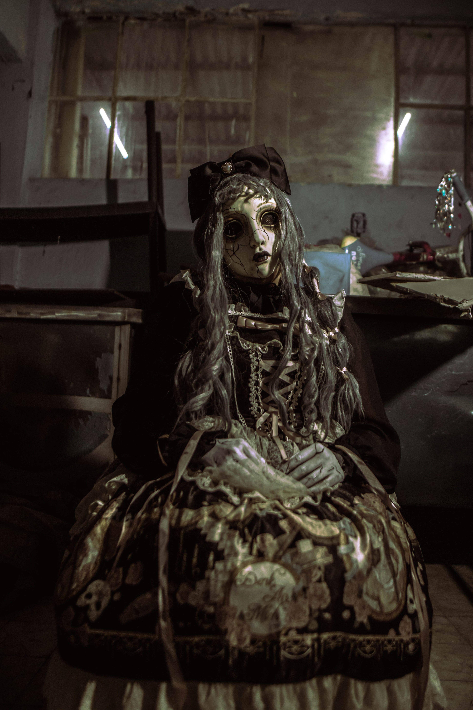

Description: A porcelain doll with cracked skin and glass eyes. It looks like it has been sitting in a dusty attic for a hundred years.
The Story: This doll is based on a real legend from Key West, Florida. The story goes that the doll was given to a young boy in the early 1900s. Soon after, strange things started happening in the house. The boy would wake up screaming, claiming the doll moved around his room at night and whispered to him. The family eventually locked the doll in the attic, but the boy would still find it standing at the foot of his bed in the morning. If you take this doll home, you should probably say hello to it when you walk in the room. It gets angry if you ignore it.